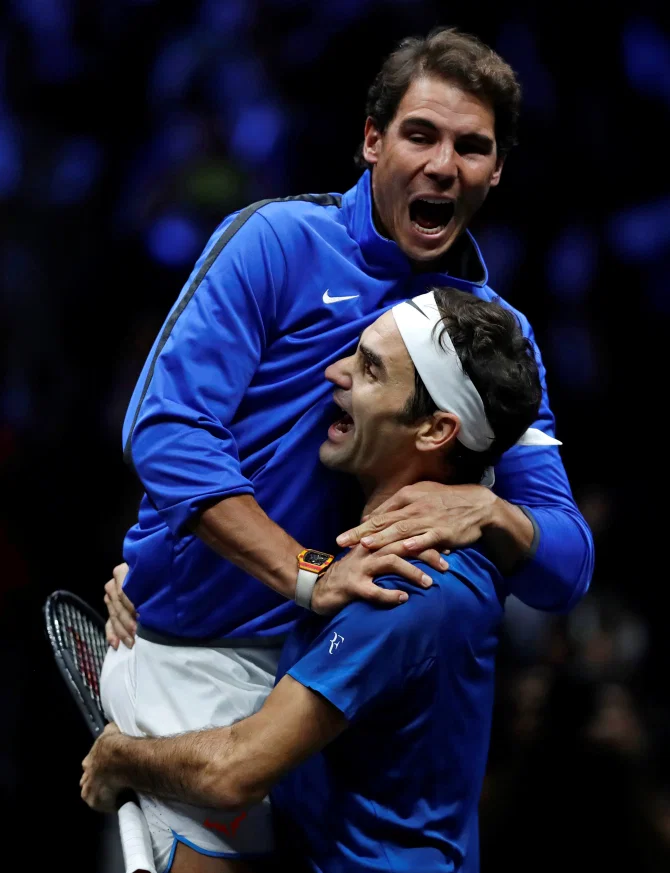

DNBC NEWS
DNBC NEWS
DNBC NEWS
Rafael Nadal reveals two reasons why he has dominated tennis with Federer and Djokovic
4 Mar 2020, 13:05Updated: 4 Mar 2020, 13:05
RAFAEL NADAL revealed his ongoing rivalry with fellow tennis legend Roger Federer stays on the court - because they are good friends off it.
RAFAEL NADAL revealed his ongoing rivalry with fellow tennis legend Roger Federer stays on the court - because they are good friends off it.

But with their careers intertwined since Nadal burst on to the scene in 2004, the Spaniard
revealed they get on really well after sharing the limelight for so many years.
He said: "It’s a rivalry, of course, but it’s also a friendship.
"We’re having a great story together. We have had long careers.
"Facing each other in the most important tournaments for such a very, very long time.
"Creating positive things for charity, playing in special events like we did in Cape Town in
South Africa like we did a few weeks ago."
Federer may lead Nadal 20-19 in terms of Grand Slam titles - and 103-85 in all tournaments - but
it is the Spaniard who leads the head-to-head record 24-16.
He won the first meeting - a 6-3 6-3 win at the Miami Open in 2004 - and did the same when they
initially faced off at a Grand Slam
RIVALRY FOR THE AGES
n total, Fedal have played nine Grand Slam finals with Nadal, 33, winning five - although
Federer did win their most-recent major final meeting in Australia in 2017.
At Wimbledon in 2008, with Federer looking to complete a hat-trick of SW19 final victories over
Nadal, the Spaniard finally got his revenge, winning 9-7 in the fifth set in what is widely
regarded as the greatest tennis match of all time.
They met twice in 2019 - at the French Open and at Wimbledon - with the Swiss superstar claiming
their most-recent clash with a dominant win on Centre Court.
Since then, though, Federer and Nadal, with a combined age of 81, teamed up to help Europe beat
the Rest of World in the Laver Cup.
And in February, the iconic figures of the sport headed to Cape Town together to play in the
Match For Africa.
As well as having a record 51,954 fans in attendance as they took to the court with Bill Gates,
Rugby World Cup hero Siya Kolisi and comedian Trevor Noah, they raised a whopping £2.7million
for charity.
Wimbledon
Federer, 38, has since gone under the knife to have surgery on a problematic knee which has
ruled him out of the clay-court season and makes him a doubt for Wimbledon.
And with Nadal aiming for yet another French Open title at Roland Garros, he knows it would be
lucky No13.
That is because the win would draw him level with Federer at the top of the tree for Grand Slam
titles and pull three clear of Novak Djokovic, who has won five of the last seven including
January's Australian Open.